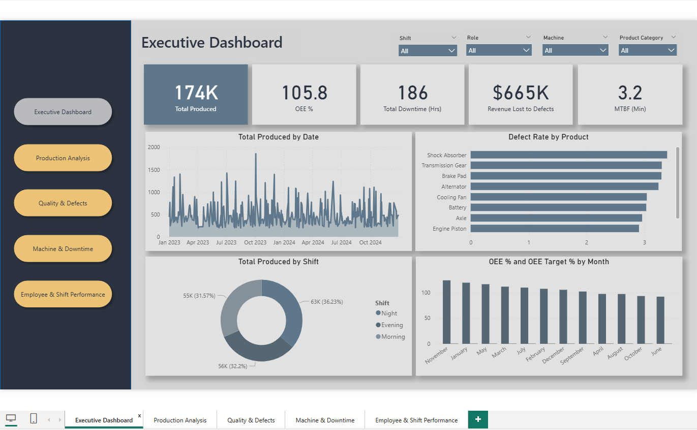
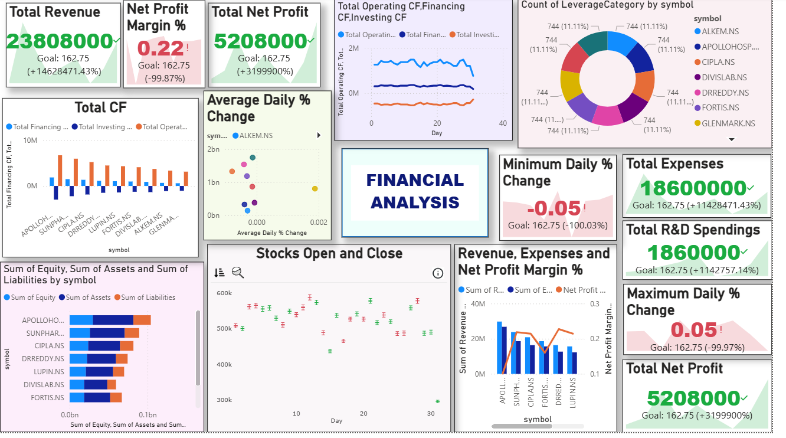
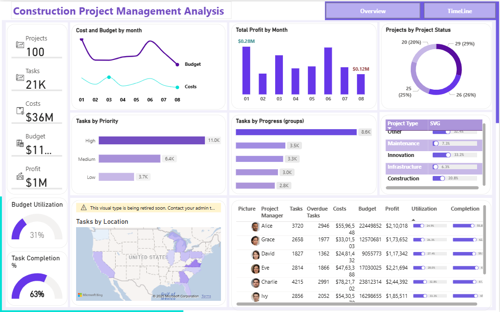
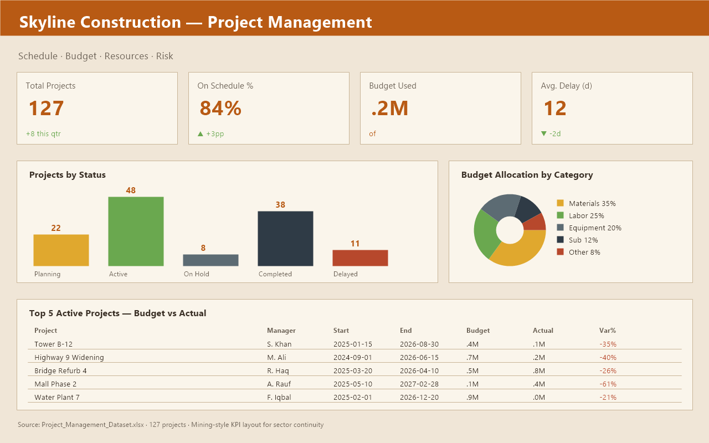

Production Control Towers
Single-page command centres for the General Manager — tonnes, grade, recovery, availability, cost — all on one screen, refreshed every 60 seconds.
Mining Engineer × Power BI Developer
Star-schema modelling. VAR/RETURN DAX. TMDL authoring. Built for the pit floor — by someone who has stood on it.

End-to-end Power BI delivery for mining and heavy industry. From data source to executive sign-off — model, DAX, design, deploy.
Single-page command centres for the General Manager — tonnes, grade, recovery, availability, cost — all on one screen, refreshed every 60 seconds.
Truck-and-shovel availability, MTBF, MTTR that respects a 2-panel / 3-crew rotation. No double-counted downtime across shift handoffs.
Penetration rate, powder factor, fragmentation, dilution — modelled on a per-hole grain with bench, pattern, and explosive dim tables.
Recovery%, throughput, mass-pull — weighted correctly, never as AVERAGEX over hourly samples. Crusher, SAG, mill, flotation circuits.
$/ton, $/oz, AISC dashboards that bridge dispatch and finance on date + site — the OPEX–tonnage gap that breaks 90% of mining models.
Stuck on a measure? Need a TMDL migration from TMSL? Need a calc group for rotating crews? I write the code that the rest of the team can read.
Six production-grade mockups — modelled with a star schema, KPI
measures built with VAR/RETURN, and a daily-cadence rhythm
a shift supervisor can scan in 30 seconds. The first dashboard is
interactive — switch shifts and tabs to see the measures at work.
Real .pbix dashboards I have downloaded, opened in
Power BI Desktop, and reverse-engineered for star-schema patterns,
DAX, M code, and KPI design. The closest match to a mine site is the
Manufacturing project — same OEE / MTBF / MTTR KPI
family. Click a card for the source repo and the download.

Industry
Star schema with FactProduction + 5 dims (Date, Machine, Shift, Product, Employee). KPI family — OEE, MTBF, MTTR, Defect Rate — is directly transferable to a mine's truck-and-shovel fleet.

FinanceTwo pages — full financial analysis and a 3-month market view. The author exported the M queries and DAX measures as plain-text files in the repo, so you can read the plumbing without opening Power BI.

Civil
Lightweight alternate construction PBIX — useful for comparing two approaches to the same domain (progress, budget, resources). Good baseline for a civil-side adaptation of the $/ton pattern.

Civil
The largest single dataset of the four — a real-world project portfolio of 127 projects across schedule, budget, and risk. The .pbix references its Excel source by path — re-point the data source on first open.
A predictable four-step delivery — designed for a mine that cannot afford a six-month BI programme. Each step ends with something tangible, not a status deck.
2–3 calls with your operations, maintenance, and finance leads. I map the data sources, KPIs, and the daily decisions the dashboard has to support. Output: a one-page scope + data dictionary.
Star schema in TMDL. DAX measures with VAR/RETURN. Power Query for the messy joins. Output: a working .pbix with 2–3 sample pages and a measure catalogue.
Full report pages, themes, filters, drillthrough, RLS where needed. I write the user guide and the data refresh runbook. Output: a signed-off report, deployed to your workspace.
Gateway configuration, scheduled refresh, alerts, and 30 days of post-go-live tuning. I stay on call for the first month so the shift team can break it without breaking the project.
Placeholder quotes — replace with real client feedback once you have
your first project. (See script.js to edit.)
Shafiq built our shift-handover dashboard in three weeks. The first morning it went live, the foreman caught a failing haul truck two hours earlier than we would have with the old spreadsheet. That alone paid for the project.
Most BI developers cannot read a mining shift roster. Shafiq designed our MTBF calc group around our 7-on / 7-off rotation on the first attempt — no rework, no off-by-one creep at the panel boundary.
We needed a cost-per-tonne view that bridged dispatch and finance. Other consultants wanted six months. Shafiq had a working model in ten days — the CFO could finally see where the OPEX was going.
I'm a Mining Engineer who upskilled into a Power BI Developer. I work where the pit floor meets the semantic model — translating the way haul trucks, drills, mills, and crews actually behave into star schemas and DAX that mine managers can read at a glance.
Most BI developers can't tell a haul truck from a hoist. I can —
and I can also write the VAR/RETURN that lights up its KPIs.
A hybrid skill set: enough mining to design the right model, enough data engineering to make it fast, enough DAX to make it sing.
Short, working notes on the patterns I use to model mining data. Sketches only — full articles live in the mine-bi-playbook repo.
How to model a maintenance KPI that respects a 2-panel / 3-crew roster and a 7-on/7-off rotation — without double-counting downtime across handoffs.
VAR _Downtime = SUMX(FILTER(Downtime, Downtime[CauseGroup] <> "Standby"), Downtime[Hours])
VAR _OpHours = [OperatingHours]
RETURN DIVIDE(_OpHours - _Downtime, _OpHours)Fact: FactTruckEvent at loader-cycle grain. Dims: Truck, Loader, Shovel, Bench, Shift, Crew, Material. Avoids the classic "sum of cycle-time" trap.
Why DATESINPERIOD lies on a rotating roster — and a calculation group that uses a custom ShiftDate marked date table to fix it.
Recovery must be computed as SUM(Concentrate × Grade) / SUM(Feed × Grade) — never as AVERAGEX over hourly samples.
TRIFR uses recordable injuries; LTIFR only lost-time. The trick: keep the denominator as a separate measure so it isn't accidentally double-counted.
OPEX comes from finance; tonnage from dispatch. Bridge them on date + site, not on a single fact, or you'll fight the model forever.
The questions I get on every first call. If yours is not here, ask me directly.
A scoped single-dashboard project (production control tower or fleet OEE) starts in the USD 3,000–8,000 range, depending on data-source complexity and number of pages. A multi-dashboard programme is quoted as a fixed-fee package. I share a one-page quote after the Discover step — no surprise invoices.
A single dashboard: 3–5 weeks from kickoff to sign-off. A three-dashboard programme: 6–10 weeks. I do not start until we have agreed a written scope and a data dictionary — that adds 3–5 days up front but saves months of rework.
Yes — remote-first, async-friendly, with overlap windows for AU / EU / Americas. I have delivered projects from three continents without ever being on site. The Discover calls are usually 3 × 60 min over a week.
That is exactly what I design for. Star schema, named M queries, parameters, and TMDL mean a new dimension or a new fact table is a 30-minute change, not a re-build. I write the runbook so your internal team can extend it after handover.
Yes. I sign client NDAs as a matter of course. I am happy to work in your tenant, your VPN, or a sealed environment for sensitive operational data. I do not retain copies of client data after project close.
I do that too. A 2-hour DAX rescue at a fixed fee — you send the .pbix or a code snippet, I send back a working measure with a written explanation. No project, no scope, no invoice surprise.
I am open to new projects. The fastest way to reach me is email — I reply within 48 hours. If you'd like a free 30-minute audit of your current Power BI model, mention "audit" in the subject line.
Or skip the back-and-forth:
Email me for a free 30-min audit